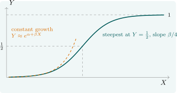

3.4 The logistic curve
Many economic variables are proportions, bounded by \(0\) and \(1\): the share of households owning a mobile phone, the fraction of firms exporting, the probability that a loan is repaid. A straight line in \(X\) eventually leaves the interval \([0, 1]\), so it cannot be the right model over a wide range. The logistic curve stays inside it.
Theorem 3.4.1. The logistic function \[ Y = \frac {e^{\alpha + \beta X}}{1 + e^{\alpha + \beta X}} \] lies strictly between \(0\) and \(1\), and it is linearised by the logit transformation: \[ \log \frac {Y}{1 - Y} = \alpha + \beta X . \] Its marginal effect is \(dY/dX = \beta Y(1 - Y)\), which is largest, at \(\beta /4\), where \(Y = \frac 12\).
Proof. Write \(z = \alpha + \beta X\). Since \(e^z > 0\), \(0 < e^z/(1 + e^z) < 1\). Then \[ 1 - Y = \frac {1}{1 + e^z}, \qquad \frac {Y}{1 - Y} = e^z, \qquad \log \frac {Y}{1 - Y} = z = \alpha + \beta X . \] Differentiating \(Y = (1 + e^{-z})^{-1}\), \[ \frac {dY}{dX} = \beta \frac {e^{-z}}{(1 + e^{-z})^2} = \beta Y(1 - Y) , \] and \(Y(1 - Y)\) is maximised at \(Y = \frac 12\), where it equals \(\frac 14\). □
The ratio \(Y/(1 - Y)\) is the odds, so the logit is the log-odds and \(\beta \) is the change in the log-odds per unit of \(X\). The curve is S-shaped (Figure 6). Growth is slow at first, fastest at the midpoint and slow again as the population saturates, which is the classic pattern of the diffusion of a new technology. In its early phase, when \(Y\) is small, \(\log (Y/(1 - Y)) \approx \log Y\), and the logistic is indistinguishable from the constant growth curve. That is why Example 3.2.2 looked like constant growth, and why its extrapolation was absurd.

When the data are observed proportions \(p_i\) from groups of size \(n_i\), the logit regression \(\log \bigl (p_i/(1 - p_i)\bigr ) = \alpha + \beta X_i + v_i\) can be fitted by least squares, with two cautions. The transformation is undefined if any \(p_i\) is \(0\) or \(1\). And the variance of the logit of a proportion is approximately \(1/\bigl (n_iP_i(1 - P_i)\bigr )\), which changes with \(P_i\), so the disturbances are heteroscedastic and weighted least squares is more efficient. When the data are individual \(0\)–\(1\) outcomes rather than proportions, the logit must instead be estimated by maximum likelihood, the subject of the section on limited dependent variables.
Questions on this section
Stuck on something here? Ask below and it stays attached to this topic.